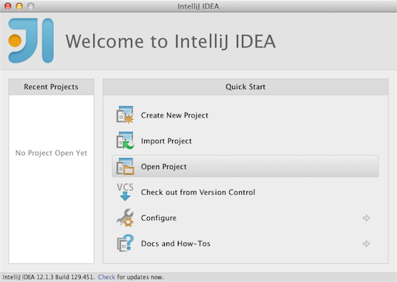

Install and configure maven.
Open the application package in your IDE.
IntelliJ IDEA
supports opening the example/pom.xml file directly:

If you are running IntelliJ on a Linux host, you also need to configure the test environment.
There are some known issues when using the Eclipse IDE.
The example project contains a single request /
response processor that responds "Hello, World!" to all incoming requests.
Please note that the Processor is only one of several available
component types that can be deployed.
To build, do
$ mvn clean install
from the project root. This builds the complete application package file
target/application.zip, which you can now deploy and run.
The Maven target generate-sources generates the ExampleProcessorConfig
class from the src/main/resources/example-processor.def file. This is
exercised when your run the above install target. The simplest way to run this from
within IntelliJ is to exercise the readily available compile target from the Maven
interface on its right-hand border:

To run your application package, do:
$ mvn test -Dtest=ApplicationMain
Then, run your Processor using your favourite
http client, and observe the expected output:
$ curl http://localhost:8080/processing/
{"datalist":[{"data":"Hello, services!"}]}
The JDisc Container also has a useful built-in handler that responds
to 'http://localhost:8080/ApplicationStatus'. This
handler returns information about the deployed application and its
components, e.g. server ports and URI bindings for request
handlers. The output is in Json format, so JSONView or another add-on
is usually needed for nicely formatted output in the browser.
To deploy your application, refer to application package deployment.
Part of the generated application package is the integration test in
src/test/java/com/yahoo/example/ApplicationTest.java.
This test demonstrates how the
com.yahoo.application.Application class can be used to run the JDisc
Container in a JVM. Not only is this useful for testing, the same approach can be used
in production on single-vm environments (e.g. grid jobs).
Notice the com.yahoo.application.container.JDisc class that is accessed by
the test through app.getJDisc(clusterName). That class has methods for
exercising all common JDisc component types.
Notice how the the test disables the network layer in the call to the
Application factory method. Unit tests should disable
the network to allow tests to be run in parallel. However, to have the JDisc
Container bind to the appropriate network sockets, the network needs to be
enabled.
IntelliJ does not pick up custom test profiles from
your pom.xml. This means that if you are running IntelliJ on a Linux host you
need to manually configure its test environment with a reference to the
library path (i.e. $VESPA_ROOT/lib64). The simplest way to do this is to edit the
default configuration for JUnit.